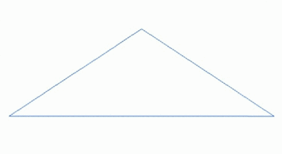
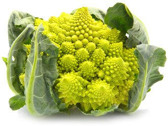
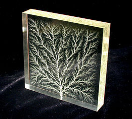

|  |  |  |
| Геометричні фрактали застосовуються для отримання зображень дерев, кущів, берегових ліній тощо. Алгебричні та стохастичні — для побудови ландшафтів, поверхні морів, моделей біологічних та інших об'єктів. | Суцвіття Капусти Романеско | Високовольтний розряд в блоці акрилу створює фрактальний рисунок Ліхтенберга. |
| На головну сторінку | ||